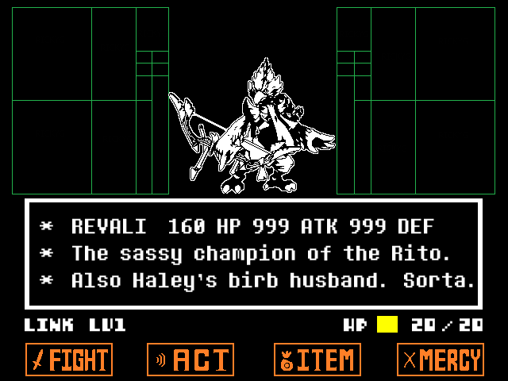

UNDERBIRD
A Zelda BotW x Undertale crossover game where you
can fight everyone's favourite a**hole!
WARNING! Contains spoilers for The Legend Of Zelda: Breath Of The Wild
and Undertale!
Current version: v1.0.0.1 (updated on 20.6.2017)

DOWNLOAD IT HERE
---INTRODUCTION---
This fight takes place on Vah Medoh after Revali challenged
Link in "his" memory.
Just like UNDERTALE itself, this game offers 3 ways to play it:
-The Genocide route: Kill Revali, and you're good to go.
It's that simple, but not at all satisfying.
-The Neutral route: Probably the easiest one. This will
occur if you don't meet the requirements for
the Pacifist route, but you couldn't kill Revali fast
enough. Let's just say he's a bit...impatient.
You can't win this theoretically, but if you reach my secret
message, well, what's wrong with you?
-The Pacifist route: Without a doubt the hardest way, but
the most satisfying. You have to ACT
appropritately at specific times, which can be kinda hard to
figure out. It should be possible, however,
since Revali gives you hints whenever you need to ACT. Just
read the text.
---CONTROLS---
Arrow Keys: Move SOUL or select option
SPACE: Choose option
SHIFT/BACKSPACE: Go back to previous menu (For example,
press it in the ACT menu to return to the action selection)
F11: Toggle fullscreen mode
---CHANGELOG---
v1.0.0.1:
+ Fixed a bug that glitched the dodging box
+ Made one attack slightly easier to dodge
---CREDITS---
Created by me (ToadsworthLP)
Attack on Vah Medoh 8-bit remix by Loeder
Revali sprite by ahruon, edited by me
All UNDERTALE graphics, sound effects,... by Toby Fox
Haley Ojedi for the inspiration
I hope you'll have a lot of fun with this game!